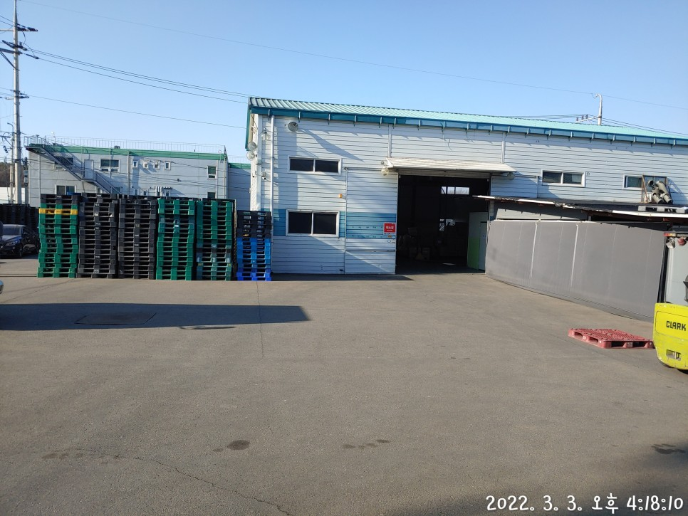

S-globalplus기업의 물류업무를 전문업첵 위탁해서 진행해주는것 . . . "3 P L"
고객의 요구를 들어준다는 의미인 풀필먼트!!
많은 인플런서분들의 고민. 이 좋은 상품을 힘들게 만들었는데
제대로 관리하고 최상의 컨디션의 상품으로 보관했다가 고객에게 가는일
고민이 많으실것으로 생각됩니다.
저희 회사는 10년이상의 경험과 노화우 경력직들로 이루워진 모든일이 진행가능한 시스템을 갖추고있습니다.
500평 창고형 건물 2개를 단독으로 소유하고있으며,
현재 홈쇼핑의류 직택배 운영을 하고있습니다.

밴드사로 부터 해외상품 입고, 보관, 주문건 수집 및 소포장, 출고처리, 운송장 업로드, 재고확인 및 관리, 롯데택배, 씨제이대한통운, 한진택배와 상시계약체결되어 있는 회사입니다. 모든 송장출력 시스템을 갖추고있고, 홈쇼핑 CS관련업무까지 현재 진행중이며., 다양한 경험과 경력을 갖춘 직원들이 상시 상주하고있습니다. 힘들고 어려운시기에 귀하게 만드신 상품! 저희가 고객님께 안전하게 배송도와드릴께요.